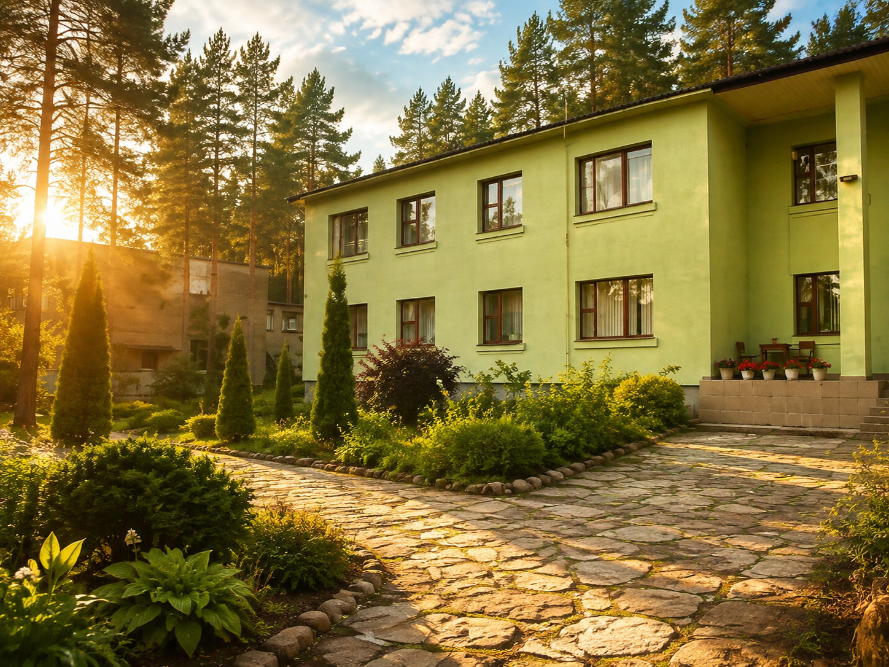

+375 29 784 18 20
|
+375 29 557 86 41
Обращение в реабилитационный центр — важный шаг, который требует доверия и понимания.
Мы готовы рассказать о программе реабилитации, условиях проживания, порядке поступления и ответить на вопросы человека и его близких.

Центр реабилитации зависимых от алкоголя и наркотиков «Анастасис Сосновка» 231825, Республика Беларусь Гродненская область Слонимский район аг. Сосновка ул. Школьная, 2
+375 1562 4 77 46
+375 1562 4 76 04
+375 29 784 18 20
+375 29 557 86 41
Ежедневно с 8:00 до 21:00
Email:
anastasis.by@mail.nu
В центр принимаются мужчины и женщины от 18 до 60 лет, которые приняли решение начать путь восстановления и готовы отказаться от употребления алкоголя или наркотиков.
Перед поступлением проводится предварительная беседа по телефону, во время которой мы знакомимся с ситуацией человека, отвечаем на вопросы и обсуждаем возможности помощи.
Окончательное решение о поступлении принимается после личного общения при приезде в центр.
Все участники программы обеспечиваются трехразовым питанием, постельными принадлежностями и необходимыми материалами для прохождения программы.
Важно соблюдать правила проживания и условия участия в программе, с которыми человек знакомится при поступлении.

Удобный вариант для самостоятельного приезда. Маршрут и время прибытия можно уточнить по телефону центра.

Информация о маршрутах будет размещена после подключения актуальных данных.